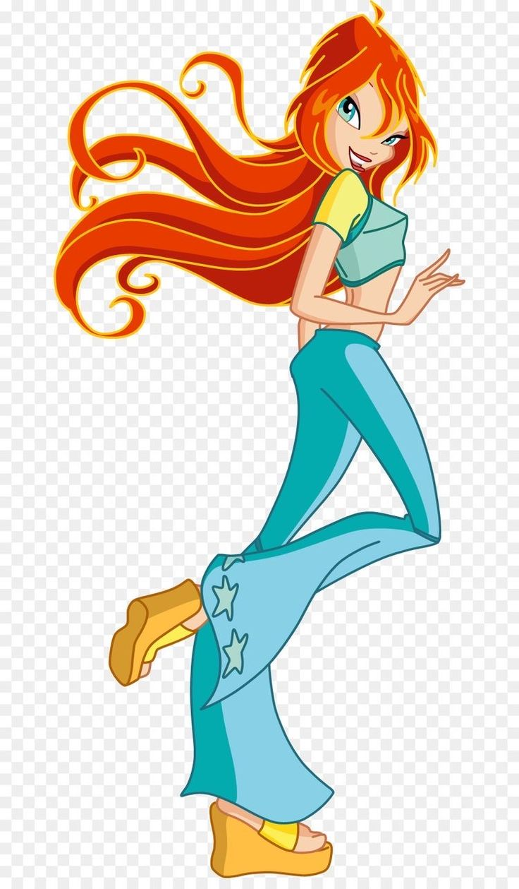
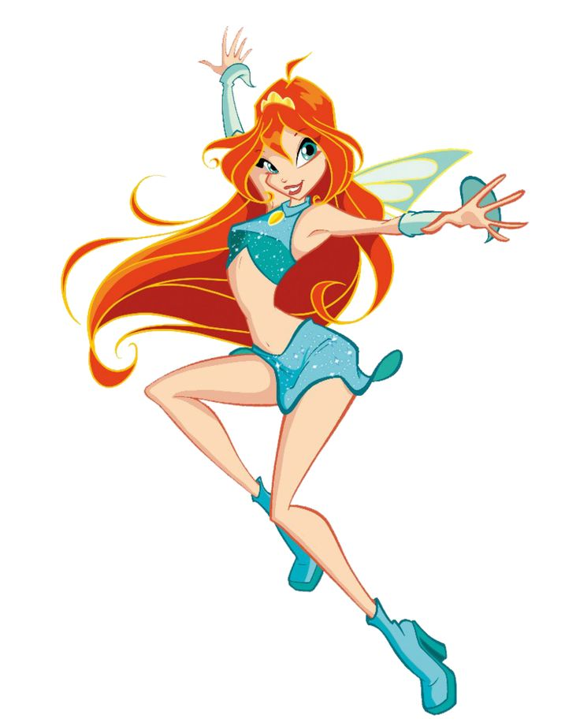
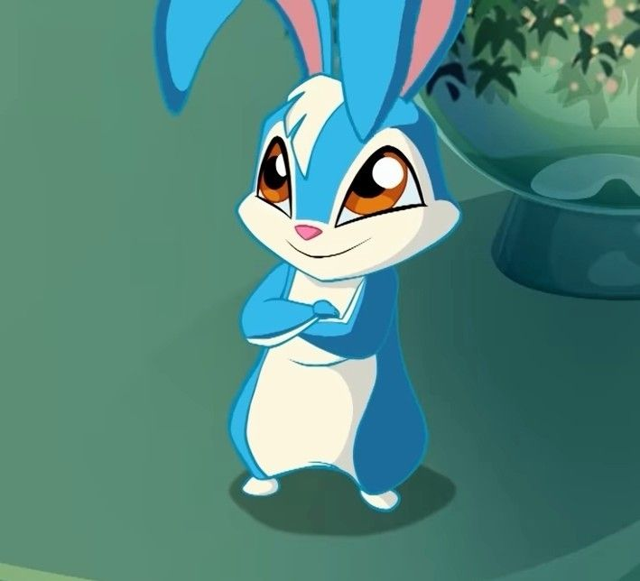

|
 |
 |
Bloom é a protagonista de O Clube das Winx e uma das fadas mais importantes da Dimensão Mágica. Ela é conhecida por sua personalidade determinada, generosa e corajosa, além de possuir um dos poderes mais antigos e extraordinários do universo mágico: a Chama do Dragão.
Bloom nasceu no planeta Domino, também conhecido como Sparks em algumas versões, e é filha biológica do rei Oritel e da rainha Marion. Ela possui uma irmã mais velha, Daphne, que é uma ninfa poderosa.
Quando Bloom ainda era um bebê, seu planeta foi atacado pelas forças das Trevas. Para protegê-la, Daphne enviou Bloom para a Terra, onde ela foi encontrada e adotada por Mike e Vanessa, um casal humano que a criou como filha em Gardenia.
Durante sua infância, Bloom cresceu acreditando ser uma garota comum. Entretanto, sua vida mudou quando conheceu Stella, a Fada do Sol e da Lua, que estava sendo atacada por um ogro. Ao tentar ajudá-la, Bloom descobriu que possuía poderes mágicos.
Depois desse acontecimento, Bloom decidiu ingressar na Escola de Fadas de Alfea, localizada em Magix. Lá, conheceu Flora, Musa e Tecna, formando com elas o grupo que ficaria conhecido como Clube das Winx.
Ao longo de suas aventuras, Bloom passa a investigar suas verdadeiras origens e descobre que é a princesa de Domino. Sua jornada envolve reencontrar sua família biológica, compreender a origem de seus poderes e enfrentar diversos inimigos que ameaçam a Dimensão Mágica.
Na sua primeira transformação, conhecida como Magic Winx, Bloom manifesta os poderes da Chama do Dragão, uma energia mágica primordial associada à criação da Dimensão Mágica.
Seu poder está relacionado ao fogo, mas vai muito além das chamas comuns. Bloom consegue utilizar essa energia em diferentes situações, tanto para atacar seus inimigos quanto para se proteger e ajudar seus amigos.
• Controle do fogo: Bloom pode criar e manipular chamas mágicas, utilizando-as em seus ataques e feitiços.
• Chama do Dragão: sua principal fonte de energia mágica, extremamente poderosa e ligada à criação da Dimensão Mágica.
• Rajadas de energia: consegue lançar poderosos ataques mágicos contra seus adversários.
• Escudos mágicos: utiliza sua energia para criar barreiras de proteção contra ataques.
• Resistência à magia: sua ligação com a Chama do Dragão permite que ela enfrente ameaças mágicas muito poderosas.
• Voo mágico: como fada, Bloom pode voar utilizando suas asas mágicas.
Na transformação inicial, Bloom apresenta cabelos longos e ruivos, asas delicadas em tons de azul e uma roupa característica composta por um top azul, saia curta e botas. Seu visual combina com sua personalidade energética e com a natureza de seus poderes.
Essa forma representa o início de sua jornada como fada e o primeiro passo para descobrir todo o potencial da Chama do Dragão.

Kiko é o coelhinho de estimação de Bloom e um dos companheiros mais queridos da personagem. Ele é um pequeno coelho azul, com detalhes brancos, que acompanha Bloom em diversos momentos de sua vida.
Apesar de não possuir os mesmos poderes mágicos das fadas, Kiko é muito apegado a Bloom e frequentemente aparece em situações divertidas e emocionantes. Sua presença representa o vínculo de Bloom com sua vida na Terra e com sua família adotiva.
Kiko é o animal de estimação de Bloom e não deve ser confundido com os Fairy Animals, os animais mágicos associados às Winx em aventuras posteriores.
• Bloom é a princesa do planeta Domino.
• Seus pais biológicos são Oritel e Marion.
• Sua irmã biológica é Daphne.
• Foi criada na Terra por Mike e Vanessa.
• Sua principal fonte de magia é a Chama do Dragão.
• Seu animal de estimação é o coelho Kiko.
• Ela é a personagem que dá início à formação do Clube das Winx.